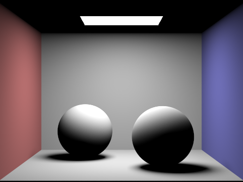

Project 3-1
Overview
In this project, I explored the rendering of 3D objects with ray tracing. It started off simple by trying to first render all shapes correctly from a view and also taking multiple samples per pixel to average across them. Then, I started considering shading and how they can bounce off of other objects, which required thinking of the geometry of the ray directions and the preserving characteristic of radiance across a ray. Finally, I explored when to refine estimates in an automatic way with adaptive sampling.
Part 1: Ray Generation and Scene Intersection
First, rays are randomly sampled n times within each pixel in image space. We need to shift these image coordinates to be centered around (0,0), then scale them to the size of the camera coordinates. Then, we use the camera to world matrix to bring it to world space. I used a handy dandy illumination estimation function and took the Monte Carlo estimate across the n samples per pixel to get an average illumination for that pixel. The directions of the rays were important in this problem.
The illumination estimation function only knows what to check for because of the triangle intersection and circle intersections I wrote. In triangle intersection, I used the Moller Tumbore algorithm to find the t for a ray that intersects the triangle (if at all) and found the surface normal by using Barycentric coordinates across triangle vertices (coordinates found by ratio of triangle areas). In sphere intersection, I found the two possible intersection points with the sphere using the sphere formula and the quadratic formula. I took the intersection point with the smallest t if possible and the further intersection point if the smaller t was behind the camera. To make sure the triangle and sphere intersections did not overwrite each other when one should be "in front" of the other wrt the camera, I updated a ray's max_t attribute so that nothing is written if the current t is greater (or behind) the already written max_t.
CBempty.dae
banana.dae
CBspheres.dae
Part 2: Bounding Volume Hierarchy
My BVH algorithm starts at the root node and traverses either the "left" or "right" node (not necessarily dependent on cardinal direction) if it is not a leaf. Once it hits a leaf, it traverses over all primitives in that bounding box and returns the one with the closest intersection point. The next split for a node is always either the X, Y, or Z direction--whichever one has the largest range across all primitives. This tree structure was created in a preprocessing function. I implemented ray-bounding box intersection by taking intersections with axis-aligned slabs, being careful that the intersection with the smaller-valued slab isn't necessarily closer to the ray origin, and taking the intersection over tmins and tmaxes across x, y, and z. I did not get nearly as much speedup when I only split across the x axis because the resulting bins could group faraway primitives together.
Here are some large .dae files that I could only render with BVH acceleration (within a reasonable amount of time)
CBlucy.dae
cow.dae
maxplanck.dae
The speedup was considerable. CBlucy.dae took 1428.1268s without BVH and 0.1215s with BVH. cow.dae took 39.3327s without BVH and 0.1584s with BVH. maxplanck.dae took 452.1056s without BVH and 0.2174s with BVH.
Part 3: Direct Illumination
In this part, I implemented two ways of sampling for direct lighting.
The first part was uniform hemisphere sampling. The input of this function takes in a ray casted from the camera towards a pixel on the image plane, which later intersected with an object. From this point on the object, I uniformly sampled a direction within a hemisphere (the top of the hemisphere is relative to the object's hit point). Then I casted the ray to see if it hit anything in the BVH. If it did, I took that light's radiance, calculated the falloff from reflectance with f(), found the cos(theta) between the light coming in and the hit point's normal plane, and divided their product by the pdf for hitting that point, which is 1/2pi for a uniform hemisphere. I averaged over all these samples to estimate the light arrived, which corresponds to the direct light's contribution to the pixel's value. It is important to realize that the reflectance for a diffuse material is not dependent on the incoming and outgoing ray directions.
The second part used imporance sampling. The key idea is that we should use rays that correspond to lights in the scene because other rays do not contribute additional information. For each light in the scene, I sample with a light sampling function n times and use those ray directions in the radiance, f(), cos, and pdf calculations as above. The catch is that I set the incoming light from a source that's behind an object as (0,0,0); this is detected by casting an additional ray between a small epsilon to the distance to the light - epsilon (to prevent intersections with the objects themselves). Then I average over the contributions from each of the lights in the scene.
Comparison between implementations. The rabbit is less noisy when we use light sampling. The lights in the dragon scene are so small that uniform sampling never finds any light. This is also true for higher sampling rates.
Bunny + uniform sampling + 16 samples/pixel + 8 samples/light
Bunny + light sampling + 16 samples/pixel + 8 samples/light
Dragon + uniform sampling + 16 samples/pixel + 1 samples/light

Dragon + uniform sampling + 16 samples/pixel + 1 samples/light
Dragon + uniform sampling + 64 samples/pixel + 32 samples/light

Dragon + uniform sampling + 64 samples/pixel + 32 samples/light
Comparison across number of light rays for light sampling; all use 1 sample/pixel. The soft shadows get less blotchy with more samples.
1 light ray

4 light rays
16 light rays
64 light rays
From the pictures comparing the two implementations of direct lighting above, we see that lighting sampling is much less blotchy than uniform hemisphere sampling, especially when the number of samples is low. This means light sampling has less noise, which makes sense because more of the data points we sample are used, while we throw all non-light source samples away in uniform hemisphere sampling.
Part 4: Global Illumination
My indirect lighting function estimates the one bounce radiance and multi-bounce radiance from the surface of one object in the scene. If the ray depth is 0 (it should not bounce anymore), I return the zero color. Otherwise, I calculate the one bounce radiance using the function written in the previous part because it does a nice job with sampling lights in many directions (less noise than 1 sample). Then, if the ray has not reached its minimum depth and if it does not hit the 0.35 chance of terminating (Russian Roulette), I sample a direction to get light from a different source that possibly does not emit light on its own. The radiance from that point (obtained through a recursive call), is preserved along the ray, regardless of direction. So I just use that radiance in the regular reflectance, cosine angle, and pdf formula and add that bounced light to the one bounce radiance. This is the final estimated indirect radiance. It's important to use multiple samples for the one-bounce estimation, or else the result will be very coarse.
Images with global illumination
bench
blob
bunny
CBbunny
CBempty
CBspheres_lambertian
dragon
wall-e
Here is a comparison between direct and indirect illumination. We get the light reflecting back to the previously dark parts of the sphere when we do indirect illumination!
Direct light only
Indirect light only
We can see how the light gets reflected to originally dark areas with indirect lighting with a larger and larger ray depth
0 max ray depth
1 max ray depth
2 max ray depth
3 max ray depth
100 max ray depth
We can also see how things get less noisy as I increase the sample per pixel rate
1 sample/pixel
2 sample/pixel
4 sample/pixel
8 sample/pixel
16 sample/pixel
64 sample/pixel
1024 sample/pixel
Part 5: Adaptive Sampling
My implementation of adaptive sampling modified the sampling loop I made in Part 1. It only sampled rays from within the pixel until a certain variance threshold is reached. The threshold is satisfied when I is less than a scalar multiplied by the mean of samples. I is 1.96 * standard deviation of estimates / sqrt(number of samples), which is related to confidence intervals. The sum of samples and sum of squares of samples are accumulated every time global illumination is estimated to aid in this variance and mean estimation. To prevent too much extra computation, I is calculated every 64 samples. This allows for early termination if we don't need that many light rays to estimate pixel values in that area, and allows for us to allocate compute time to places that do.
In the below, the adaptive algorithm chooses to focus its attention on places with lots of indirect light, which makes sense because those calculations are complicated and tend to have more noise in calculation. It's less blurry in those areas!! While implementing, it's important to use the standard deviation instead of the variance or else there will be early termination.
Result render
Sampling rates for each pixel (red = more; blue = less)